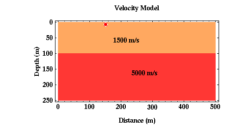
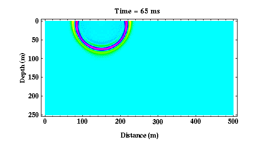
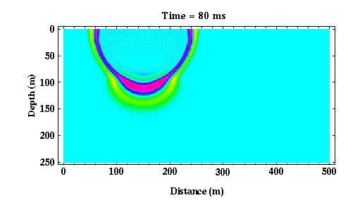
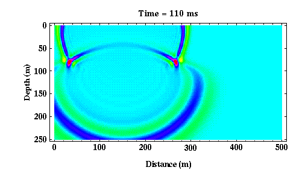
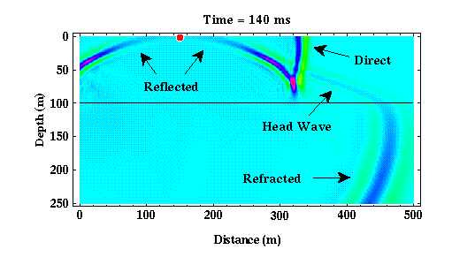

Another Simple Earth Model: Low-Velocity Layer Over a Halfspace
Thus far we have considered body wave propagation through constant velocity media and in media consisting of a high-velocity layer overlying a lower velocity halfspace. As observed on the surface of the Earth, a constant velocity media only generates direct waves while the layered model generates direct and reflected waves. What happens if the media consists of a low-velocity layer overlying a high-velocity halfspace? Consider the Earth model shown below.

Shown below are a few snapshots of the seismic waves as they propagate away from the source at times of 65, 80, and 110 ms**.



For these times, the wavefield qualitatively looks like that observed for our previous layered model consisting of a high-velocity layer overlying a low-velocity halfspace. This is true with exception to the relative curvature and the wavelength differences of the refracted wavefield compared to the direct and the reflected wavefield. In this particular case, the refracted wavefield is more curved than the direct wavefield as a consequence of the raypaths bending at the boundary in accordance with Snell's Law. Because the velocities increase across the boundary with depth, the refracted wavefield now has a longer wavelength than the direct or the reflected wavefield. The opposite sense of the velocity constrast across the boundary produced the opposite relationship in wavelengths in our previous layered structure.
From 0 to about 70 ms, the wave propagates solely within the upper layer. After 70 ms, the wave begins to interact with the boundary at 100 meters depth. As before, upon interaction with the boundary, part of the wave is transmitted through the boundary, the refracted wave, and part bounces off of the boundary, the reflected wave.
If we allow the waves to propagate further, an interesting phenomenon begins to occur with relation to the refracted arrival. Consider the snapshot shown below.

| Click Here for Animated Version |
|---|
As the refracted arrival propagates through the halfspace, because it travels faster than the direct arrival in the layer, it begins to move across the layer boundary before the direct arrival. The refracted arrival is propagating horizontally at the velocity of the halfspace, and the direct and the reflected arrivals propagate horizontally at the speed of the layer.
As the refracted wave moves across the layer boundary, it generates a new wave type in the layer called a critically refracted or head wave that propagates upward to the surface. The movie version of the above snapshots show this phenomenon the best. In the previously considered layered model, a high-velocity layer overlying a low-velocity halfspace, this arrival never exists. This is primarily because the refracted arrival, the direct arrival, and the reflected arrival all move across the boundary at the same rate (There is never a separation in the arrivals at the boundary that we see above).
In this particular example, note that if you were observing the ground's motion from any point on the Earth's surface, you could observe three distinct waves. The reflected arrival will always be observed after the direct arrival at any distance from the source, thus it can never be the first arriving energy. At short distances between the source and the receiver, the direct arrival would be observed first. At long distances, however, notice that the critically refracted arrival could be observed before the direct arrival.
These observations, if the velocity of the material increases with depth, the seismic waves recorded initially at a given receiver will be of the direct wave at short source/receiver distances and the head wave at long source/receiver distances, form the basis of the seismic refraction method.
Seismology
- Simple Earth Model: Low-Velocity Layer Over a Halfspacepg 11
- Head Wavespg 12
- Records of Ground Motionpg 13
- Travel-time Curves for a Simple Earth Modelpg 14
- First Arrivalspg 15
- Determining Earth Structure from Travel Timespg 16
- Derivation of Travel Time Equationspg 17
- High-Velocity Layer Over a Halfspace: Reprisepg 18
- Picking Times of Arrivalspg 25
- Wave Propagation with Multiple Horizontal Layerspg 26
- Travel Time Curves from Multiple Horizontalpg 27
- Hidden Layerspg 28
- Head Waves from a Dipping Layer: Shooting Down Dippg 29
- Head Waves from a Dipping Layer: Shooting Up Dippg 30
- A Field Procedure for Recognizing Dipping Bedspg 31
- Estimating Dips and Depths from Travelpg 32